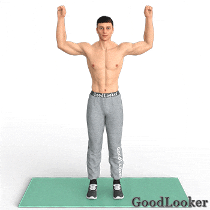
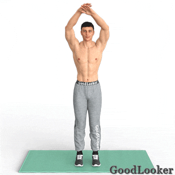

Встаньте и поднимите верхние конечности над головой. Начните опускать руки вниз и одновременно поднимать колено, совершая хлопок руками под бедром. Работа ведется на каждую сторону по очереди. Торопиться не нужно, занимайтесь в комфортном для себя темпе. Обязательно поддерживайте ровную осанку и смотрите четко перед собой. Элемент оказывает акцентированное воздействие на нижнюю часть пресса, дополнительно работают квадрицепсы и дельтовидные мышцы.
Сколько выполнять: по 10 подтягиваний колена на каждую сторону (всего 20 подъемов рук).
Расставьте ноги чуть шире линии плеч, а ладони сведите на затылке так, чтобы локти оказались развернутыми противоположно друг от друга. Поднимая правое колено к уровню низа груди, одновременно скручивайтесь корпусом, доставая его левым локтем. По идентичному принципу осуществляйте перекрестные скручивания на каждую сторону по очереди. Это одно из самых эффективных движений для проработки всего пресса целиком.
Сколько выполнять: по 10 подтягиваний колена на каждую сторону (всего 20 скручиваний).
Снова расставьте ноги чуть шире плеч. Отведите правую ногу назад, опираясь всем весом на левую. Руки подняты над головой, ладонь зафиксирована поверх другой ладони. После этого начните в интенсивном темпе поднимать правое колено, сводя его с ладонями на уровне нижней части пресса. Элемент направлен на проработку нижней области пресса, а также отдельных сторон косых мышц и квадрицепсов. Целый подход выполняйте на одну ногу, затем поменяйте сторону.
Сколько выполнять: 20 подтягиваний колена сначала на одну сторону, потом на другую.
Одной из лучших упражнений для похудения в области живота. Встаньте прямо и поднимите руки над головой. Специфика движения заключается в подъеме вытянутой ноги параллельно полу с одновременным опусканием верхних конечностей. В итоге пальцы рук и ног сходятся в одной точке на уровне солнечного сплетения. Каждое новое повторение сопровождается сменой стороны ноги. Элемент позволяет качественно проработать брюшные мышцы, а также растянуть плечевые суставы, верхнюю часть спины.
Сколько выполнять: по 10 подъемов ног на каждую сторону (всего 20 подъемов ног).
Боевые элементы в ходе тренировки выполняют жиросжигающую роль в силу своей интенсивности. Примите защитную стойку, удерживая руки возле головы. Корпус немного разверните, одна нога стоит впереди другой. После этого начните совершать поочередные удары перед собой сначала левой, а потом правой рукой. Старайтесь работать интенсивнее, поскольку это увеличивает эффективность упражнения. Живот напряжен. Несмотря на акцент в работе рук, элемент помогает похудеть в животе мужчине, оказывая общий жиросжигающий эффект. Целый подход выполняйте на одну сторону, затем разверните корпус в другую и повторите снова.
Сколько выполнять: по 20 ударов на каждую руку (всего 40 ударов), затем столько же с разворотом корпуса в другую сторону.

Еще одно боевое упражнение, специфика которого заключается в нанесении боковых ударов ногой. Руки прижмите к груди, приняв защитную стойку. Далее делайте пинок в сторону, стараясь поднять ногу до параллели пола. Чем выше удар — тем больше нагрузка на боковую часть живота. Элемент позволяет избавиться от проблемных жировых отложений в области пояса, развить боковые мышцы бедер, а также косые мышцы пресса. Целый подход выполняйте на одну ногу, затем поменяйте сторону.
Сколько выполнять: 15 ударов ногой сначала на одну сторону, потом на другую.
Находясь в положении стоя, разведите руки в разные стороны, согните их в локтевом суставе. Ноги стоят на ширине плеч. После этого поднимите правое колено к нижней части груди, одновременно касаясь его левым локтем. Работайте корпусом, задействуйте мышцы пресса за счет скручивающего движения. Акцент нагрузки приходится на низ пресса и косые мышцы.
Сколько выполнять: по 10 подъемов колена на каждую сторону (всего 20 скручиваний).

Это комплексное движение, состоящее из нескольких этапов. Руки сведены за головой, ноги — на шире плеч. Сначала выполните скручивание и подъем колена, соединяя его с противоположным локтем в области солнечного сплетения. После этого вернитесь в исходную фазу, поднимите вытянутую ногу перед собой и коснитесь его носка пальцами противоположной руки. Элемент оказывает колоссальный эффект на мышцы пресса. Целый подход выполняйте на одну сторону, затем поменяйте на другую.
Сколько выполнять: 10 повторений (всего 20 скручиваний) сначала на одну сторону, потом на другую.
Сделайте небольшой выпад правой ногой назад, а руки вытяните перед собой. Далее поднимите колено к груди, руками совершая воображаемое отталкивание лыжными палками от земли. Подобное движение выполняется интенсивно на нужное число повторений. В ходе выполнения основная нагрузка приходится на низ живота, укрепляются мышцы рук, разгоняются обменные процессы. Целый подход выполняйте на одну ногу, затем поменяйте сторону.
Сколько выполнять: 20 подтягиваний колена сначала на одну сторону, потом на другую.
Поднимите руки над головой, положив одну ладонь на другую. Начните подтягивать правое колено вверх и в сторону. Одновременно опускайте руки и касайтесь ими колена. После этого проделайте идентичное движение, сменив сторону. Работа ведется в быстром темпе, благодаря чему активно нагружаются боковые части пресса, развиваются косые мышцы. Дополнительно в работе участвуют дельтовидные мышцы.
Сколько выполнять: по 10 подтягиваний колена на каждую сторону (всего 20 подъемов рук).

Согнутые в локтевом суставе руки сведите перед собой. Ладони для удобства можно закрепить в замке или положить на пояс. После этого сделайте пинок перед собой, стараясь поднять ногу параллельно поверхности пола. Аналогичное движение проделайте на другую ногу, работа ведется поочередно при каждом повторении. Не сутульте спину и смотрите четко перед собой. Движение направлено на развитие нижней части пресса, а также дополнительно задействуются квадрицепсы.
Сколько выполнять: по 10 ударов ногой на каждую сторону (всего 20 ударов).
Встаньте прямо и вытяните туловище вверх, подняв руки. Специфика движения заключается в одновременном подъеме колена и опускании локтей. Точки стыкуются в области верхней части пресса, что оказывает сильнейшую нагрузку на брюшные мышцы. Каждое повторение сопровождается сменой ноги. Двигайтесь в среднем темпе, избегая рывков. Прорабатывайте мышцы четко, акцентировано и плавно.
Сколько выполнять: по 10 подтягиваний колена на каждую сторону (всего 20 подъемов рук).
Не забудьте повторить упражнения в 2 круга.